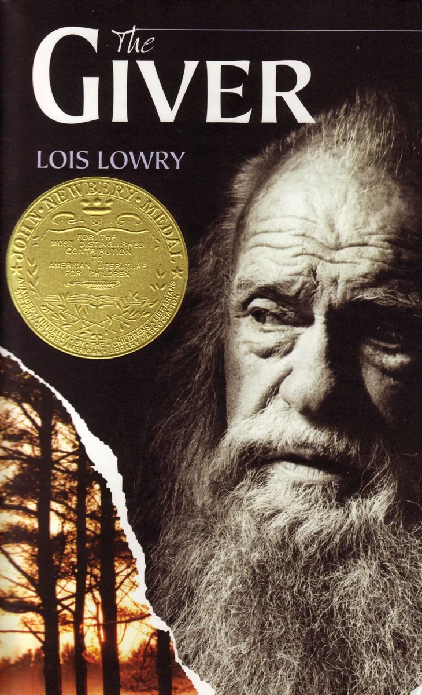

The Giver is written from the point of view of Jonas, an eleven-year-old boy living in a futuristic society that has eliminated all pain, fear, war, and hatred. There is no prejudice, since everyone looks and acts basically the same, and there is very little competition. Everyone is unfailingly polite. The society has also eliminated choice: at age twelve every member of the community is assigned a job based on his or her abilities and interests. Citizens can apply for and be assigned compatible spouses, and each couple is assigned exactly two children each. The children are born to Birthmothers, who never see them, and spend their first year in a Nurturing Center with other babies, or “newchildren,” born that year. When their children are grown, family units dissolve and adults live together with Childless Adults until they are too old to function in the society. Then they spend their last years being cared for in the House of the Old until they are finally “released” from the society. In the community, release is death, but it is never described that way; most people think that after release, flawed newchildren and joyful elderly people are welcomed into the vast expanse of Elsewhere that surrounds the communities. Citizens who break rules or fail to adapt properly to the society’s codes of behavior are also released, though in their cases it is an occasion of great shame. Everything is planned and organized so that life is as convenient and pleasant as possible.
Lois Ann Lowry is an American writer. She is the author of several books for children and young adults, including The Giver Quartet, Number the Stars, and Rabble Starkey. She is known for writing about difficult subject matters, dystopias, and complex themes in works for young audiences. Lowry has won two Newbery Medals: for Number the Stars in 1990 and The Giver in 1994. Her book Gooney Bird Greene won the 2002 Rhode Island Children's Book Award. Many of her books have been challenged or even banned in some schools and libraries. The Giver, which is common in the curriculum in some schools, has been prohibited in others..
Now, lets play some tic-tac-toe